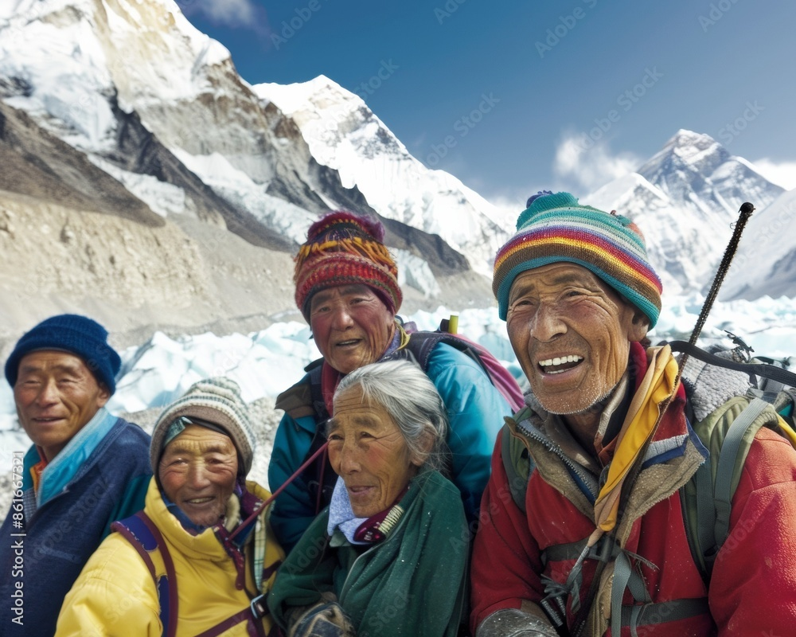

The Sherpas

The Sherpa people are an ethnic group native to the most mountainous regions of Nepal and the Himalayas. Renowned for their elite climbing skills, immense physical stamina, and deep spiritual connection to the mountains, they serve as the indispensable backbone of every successful Everest expedition. Without their expertise, navigating the treacherous routes would be nearly impossible for foreign climbers.
Sherpas take on the incredibly dangerous work of fixing safety ropes up the entire mountain, carrying heavy gear, setting up high-altitude camps, and guiding climbers safely through volatile hazards like the Khumbu Icefall. Their unmatched genetic adaptation to high altitudes allows them to perform grueling physical labor where oxygen levels are dangerously low.